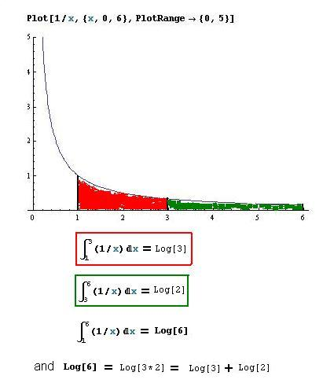
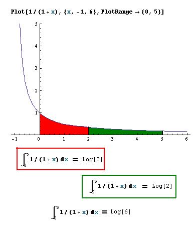

Area under curve 1/x -> logs, and the area under 1/(1+x) -> logs and infinite series/Chapter 13
Don graphed 1/x in Mathematica and found the following:

The area under the curve 1/x from 1 to 3 is equal to the loge 3 =~ 1.0986
The area under the curve 1/x from 3 to 6 is equal to the loge 2 =~ 0.6931
The area under the curve 1/x from 1 to 6 is equal to the loge 6 =~ 1.7917
The derivative of Logex = 1/x -use the pencil approach, or
for a proof, see
http://www.5min.com/Video/Learn-about-Proof-ddx--ln-x--1x-99173876
and the integral of 1/x = Logex
You might try other areas, like A1-4 1/x + A4-7 1/x and see if it equals A1-7 1/x .
Remember Ian's discovery in Ch. 3 1/(1-x) = (1-x)-1 = 1+ x + x2 + x3 + x4 + x5 +...
If we substitute -x in for x, we get 1/(1+x) = 1- x + x2 - x3 + x4 - x5 +...
Both of these series above converge for -1<x<1
Don graphed 1/(x+1) in Mathematica and found the following:
|
The graph of
y =
1/(1+x)
at the right is part of
an hyperbola like y
=
1/x
except it is shifted 1 unit to
the left. The area under this curve from from x = 0 to x = a or
A0-a 1/(1+x)
= loge(1
+ a) and if we use the generalizations from the section above, this will
equal the integral of the infinite series 1
- a + a2 -
a3 +
a4 -
a5 +
... Taking the integral of each term separately, we get
A0-a 1/(1+x)
= loge(1
+ a) = a
- a2/2
+ a3/3
- a4/4
+ a5/5
- a6/6
+…
The natural log then, is the area under
the curve y=
1/x or y=
1/(1+x)
and it is the infinite series |
 |
putting 2 in for a in the series above because this series converges only
when a is between -1
and 1.
2 = 1.2*1.2/(0.8*0.9). Who else would think of writing 2 this way! Newton then proceeded to get the loge 2 by using the log identities log(A*B) = Log A + Log B and Log(C/D) = Log C - Log D:
(check these identities that Kavi and Kevin found at logarithms )
then the loge 2 = loge(1 + 0.2) + loge(1 + 0.2) - ((loge(1 + -0.2) + loge(1 + -0.1)). This reinforces, for me at least, that we have to write numbers different ways. Ever since I saw Sue Monell do "number names for todays date", everyday, with 5 and 6 year olds at Bank Street School for Children, 40 some years ago, I thought it was a great idea.
Write a program which will get this infinite series
loge(1 + a) = a - a2/2 + a3/3 - a4/4 + a5/5 - a6/6 +…
See if you can find loge 3 and loge 4 and others using Newton's method and check these on a calculator.